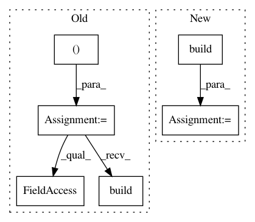

d04904cdd1df7afba9859868f4e487d3a2332070,demo_semiotic.py,,,#,6
Before Change
import scattertext as st
newsgroups_train = fetch_20newsgroups(subset="train", remove=("headers", "footers", "quotes"))
vectorizer = TfidfVectorizer()
tfidf_X = vectorizer.fit_transform(newsgroups_train.data)
corpus = st.CorpusFromScikit(
X=CountVectorizer(vocabulary=vectorizer.vocabulary_).fit_transform(newsgroups_train.data),
y=newsgroups_train.target,
feature_vocabulary=vectorizer.vocabulary_,
category_names=newsgroups_train.target_names,
raw_texts=newsgroups_train.data
).build()
semiotic_square = st.SemioticSquare(
corpus,
category_a="alt.atheism",
After Change
movie_df = st.SampleCorpora.RottenTomatoes.get_data()
corpus = st.CorpusFromPandas(
movie_df,
category_col="category",
text_col="text",
nlp=st.whitespace_nlp_with_sentences
).build().get_unigram_corpus()
semiotic_square = st.SemioticSquare(
corpus,
category_a="fresh",
In pattern: SUPERPATTERN
Frequency: 3
Non-data size: 6
Instances
Project Name: JasonKessler/scattertext
Commit Name: d04904cdd1df7afba9859868f4e487d3a2332070
Time: 2018-01-08
Author: jason.kessler@gmail.com
File Name: demo_semiotic.py
Class Name:
Method Name:
Project Name: keras-team/autokeras
Commit Name: 82060afcd474a8aedaf6a5cb445365be91744902
Time: 2020-10-07
Author: haifengj@google.com
File Name: tests/autokeras/engine/node_test.py
Class Name:
Method Name: test_time_series_input_node_deserialize_build_to_tensor